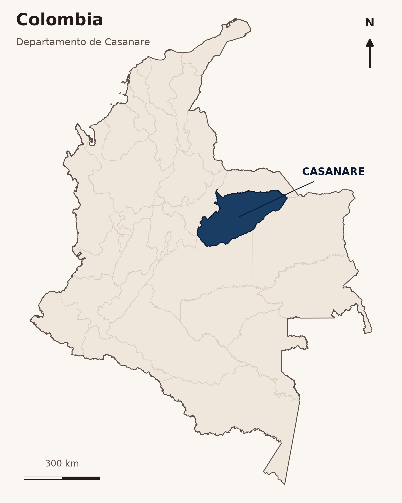
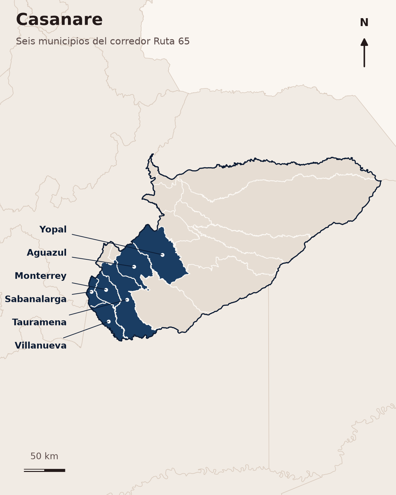
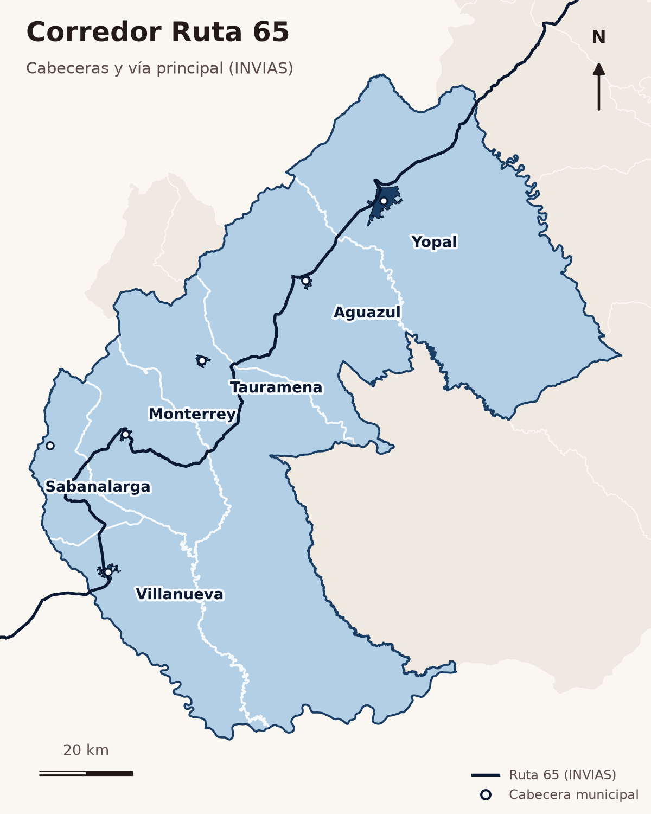

De país a corredor



Equipamientos General
Yopal concentra el 52,6 % de los equipamientos del corredor (462 de 879), mientras Sabanalarga reúne apenas 30 y una única sede de salud.

Equipamientos por municipio y categoría
Composición por categoría (n=879)
Equipamientos: urbano vs. rural por municipio (consolidado antes de depurar, n=954)
Equipamientos básicos (educación, salud, seguridad, institucional; n=482) por 1.000 hab. (pob. 2018) vs. media de los 6 municipios
Equipamientos Educativos
Sabanalarga tiene la mayor dotación por niño en edad escolar pero la menor cobertura neta (75 %): allí el problema es de demanda o permanencia, no de infraestructura.

Sedes educativas por municipio
Cobertura neta educativa por municipio (2024)
Población en edad escolar (5-16 años) por municipio (2024)
Sedes educativas por sector (n=256)
Sedes educativas por zona (n=256)
Población total anual por municipio (2018-2026, proyecciones DANE)
Alumnos matriculados por sede, por municipio (SISE 2023/2019, sedes con dato)
Equipamientos de Salud
La salud es el cuello de botella del corredor: en ningún municipio más del 11,5 % del área (máx. Sabanalarga 11,44 %) está a ≤30 min en vehículo de una IPS, y Yopal concentra el 87 % de las camas.

Suficiencia de la red de salud por municipio (2026)
Área municipal con acceso ≤30 min a cualquier IPS (%)
Naturaleza jurídica de las sedes IPS (n=157)
Capacidad instalada en salud — Casanare (depto.), 2017-2022
Fuente del referente: Banco Mundial, indicador SH.MED.BEDS.ZS «Camas hospitalarias (por cada 1.000 personas)», Colombia 2020 = 1,7 (base OMS/OCDE) — datos.bancomundial.org. Es un promedio nacional, no una norma: la OMS no publica un mínimo oficial de camas por habitante. Las sedes IPS/10.000 hab. no tienen referente oficial.
Equipamientos Sociales
Yopal tiene la mayor cantidad absoluta pero la tasa per cápita más baja (10.39 por 10.000 hab.); los escenarios deportivos dominan con 253 en total.

Conteo de equipamientos por categoría y municipio
Equipamientos sociales por cada 10.000 hab (total)
Composición por categoría (% del total, N=340)
Bienestar social: georreferenciado vs. registro oficial sin coordenadas
Equipamientos Institucionales
Yopal es el único municipio con las 8 categorías institucionales; solo Yopal tiene sedes de justicia mapeadas y solo Yopal y Aguazul tienen terminal terrestre; Aguazul, segunda población del corredor, no tiene justicia, bomberos, notaría, Defensa Civil ni presencia militar mapeada.

Equipamientos por municipio y tipo (apilado)
Composición por tipo — total corredor (n=45)
Matriz de presencia/ausencia por tipo
Índice de presencia por municipio (8 categorías)
Transporte
La accidentalidad cayó 67 % entre el pico de 2019 (419 siniestros) y 2025 (140); ningún tramo de 1 km resulta un hot spot significativo: la siniestralidad está dispersa a lo largo de la vía.

Siniestros viales por año (2016-2025)
Fallecidos y lesionados por municipio (2016-2025)
Siniestros por gravedad. n=2.753 (ANSV 2016-2025)
Distancia vial entre cabeceras municipales (red INVÍAS)
Vías
La Ruta 65 no está congestionada (V/C de 0.14 a 0.20, niveles de servicio A–B) pero sí es una vía de carga: 36.5 % de camiones en la estación 932.

Tráfico mensual total — Peaje San Pedro (todas las categorías)
Composición vehicular — Estación TPD 932 Yopal-Araguaney (TPD = 4.527 veh/día)
Km de red por estado y municipio (INVÍAS 2018)
Relación Volumen/Capacidad (V/C) y Nivel de Servicio
Espacio Público
Cuatro de seis municipios no alcanzan el mínimo de 15 m²/hab; Yopal, la ciudad principal, tiene el mayor déficit con 3.29 m²/hab, apenas el 21.9 % del estándar.

EPE por municipio (bruto vs conservador) · escala log
Área de espacio público por función (6 municipios, ha)
Accesibilidad a EP efectivo (300/500 m)
Espacio público de tránsito (andenes/senderos, km)
Fuente del referente: Decreto 1504 de 1998 (Presidencia de la República), art. 14: índice mínimo de espacio público efectivo de 15 m² por habitante — funcionpublica.gov.co. No se usa el «9 m²/hab de la OMS»: no aparece en ningún documento oficial de la OMS.
Referencias bibliográficas y fuentes de datos
Cada cifra, gráfica y mapa de las 8 láminas con su organismo, dataset o documento, año y enlace. 33 referencias; enlaces verificados el 28-sep-2026.
Portada · perfil de elevación y localización
| Dato / capa | Fuente (organismo) | Documento o dataset (+ID) | Año | Enlace |
|---|---|---|---|---|
| Perfil longitudinal real (88 muestras c/2 km; mín. 256, máx. 748 msnm; cotas 337/283/456/443/473/289 msnm) | NASA / USGS vía OpenTopoData | SRTM GL1 30 m (dataset srtm30m de OpenTopoData); contraste con ASTER GDEM v3 y Open-Elevation | 2000 (misión) · consulta 2026-09-26 | OpenTopoData · SRTM NASA LP DAAC · SRTMGL1 v003 |
| Recorrido y abscisado 183.3 km (YOP→AGZ→TAU→MTY→SBL→VNV) | Project OSRM (red OpenStreetMap) | OSRM route/v1/driving, servidor demo router.project-osrm.org | consulta 2026-09-26 | Project OSRM © OpenStreetMap contributors Licencia ODbL 1.0 |
| Coordenadas de cabeceras usadas en el perfil | OpenStreetMap (Nominatim) | Búsqueda Nominatim «<Municipio>, Casanare, Colombia» | consulta 2026-09-26 | OSM Nominatim © OpenStreetMap contributors |
| Planta esquemática del hero (radio ∝ población) | DANE | Esquema gráfico propio; población según CNPV 2018 / proyecciones PPED | 2018–2026 | dane.gov.co · CNPV 2018 dane.gov.co · Proyecciones de población |
| Mapas de localización L-01 a L-03 (Colombia, Casanare, corredor) | IGAC / DANE · INVÍAS | Marco Geoestadístico Nacional (MGN 2023, capa Municipios_Corredor_11.shp) · Red Vial INVÍAS (capa local Red_Vial_INVIAS.shp; URL de descarga original fuente no documentada) | 2023 | Geoportal DANE · datos geoestadísticos (MGN) INVÍAS OpenData/ServiciosOpenData FeatureServer/0 |
Población (base de todas las tasas)
| Dato / capa | Fuente (organismo) | Documento o dataset (+ID) | Año | Enlace |
|---|---|---|---|---|
| Población 2018 usada en tasas de PL.01, PL.04 y PL.08 (p. ej. Yopal 156.942) | DANE | Censo Nacional de Población y Vivienda (CNPV) 2018 | 2018 | dane.gov.co · CNPV 2018 |
| Serie 2018–2026 (c-e6), pob. 5–16 por edad y pirámides; Yopal 168.427 → 198.423 (+17.8 %) | DANE – Dirección de Censos y Demografía | Proyecciones municipales por área, sexo y edad PPED 2018-2042 (VP) | 2018–2042 (actualización post-COVID) | PPED-AreaSexoEdadMun-2018-2042_VP.xlsx dane.gov.co · Proyecciones de población Ficha metodológica proyecciones (PDF) |
| Población 2026 para camas/1.000 hab. y sedes IPS/10.000 hab. (PL.03; Yopal 199.286) | DANE | Proyecciones municipales por área 2020-2035 ActPostCOVID-19 | 2020–2035 | DCD-area-proypoblacion-Mun-2020-2035-ActPostCOVID-19.xlsx |
01 · Equipamientos General
| Dato / capa | Fuente (organismo) | Documento o dataset (+ID) | Año | Enlace |
|---|---|---|---|---|
| Mapa M-01 y c-g1, c-g2: 879 equipamientos en 10 categorías (954 tras deduplicación ≤50 m → 879 tras depurar registros mal clasificados: 31 no judiciales, 27 comercios etiquetados como plazas de mercado, 12 geometrías militares sobrantes, 1 parqueadero en policía, CASA FISCAL y 3 terminales duplicadas). c-g3 conserva el reparto urbano/rural del consolidado sin depurar (n=954); c-g4 usa 482 equipamientos básicos de 4 categorías | Elaboración propia (consolidación) | EQUIPAMIENTOS_CONSOLIDADO_Casanare6_FINAL.shp: une las capas de PL.02–PL.05 (MEN, MinSalud-REPS, MinCultura, ICBF, MinJusticia, OSM) | 2026 (fuentes 2019–2026) | © OpenStreetMap contributors |
| Capa nacional de equipamientos (4.017 → 37 registros) y alcaldías SUIT/DAFP (centroide municipal) | Capa del proyecto / DAFP-SUIT | Equipamientos_Nacional.shp; alcaldías SUIT — URL original fuente no documentada | s. f. | sin enlace |
| c-g3: urbano vs. rural; perímetro urbano | DANE (MGN) + catastro | PERIM_URB_Casanare6_v2.shp: cabeceras y centros poblados MGN + polígonos de avalúo catastral (fuente catastral fuente no documentada) | MGN 2023 | Geoportal DANE · datos geoestadísticos (MGN) |
| c-g4: equipamientos por 1.000 hab. | DANE | CNPV 2018 (población censada) | 2018 | dane.gov.co · CNPV 2018 |
| Campo ESTADO de los equipamientos; cementerios | — | Sin fuente (SIN_FUENTE / NO_ENCONTRADO) — declarado en la lámina | — | sin enlace |
02 · Equipamientos Educativos
| Dato / capa | Fuente (organismo) | Documento o dataset (+ID) | Año | Enlace |
|---|---|---|---|---|
| Mapa M-02, c-e1, c-e4, c-e5: 256 sedes únicas (186 oficiales / 70 no oficiales; 146 rurales / 110 urbanas; se retiraron 14 registros con COD_SEDE repetido) | Ministerio de Educación Nacional (MEN) | Sedes SISE 2023 (capa Sedes_Educativas_SISE_Corredor.shp; URL de descarga fuente no documentada); respaldo MEN «MEN_SEDES_EDUCATIVAS_PREESCOLAR_BÁSICA_Y_MEDIA» (ID x5ay-984n) / DUE 2019 | 2023 (52 sedes con dato 2019) | datos.gov.co/d/x5ay-984n |
| c-e2 y cifra clave: cobertura neta 2024 (Sabanalarga 75,0 %); c-e3: pob. 5–16 (2024) | MEN | MEN_ESTADISTICAS_EN_EDUCACION_EN_PREESCOLAR, BÁSICA Y MEDIA_POR_MUNICIPIO (ID nudc-7mev) | 2024 | datos.gov.co/d/nudc-7mev |
| c-e7 y cifra 66.525 alumnos / 281 por sede (237 sedes con dato) (matrícula, no cupos) | MEN | Campo MATRICULA de las sedes SISE 2023 (y MEN 2019 en 52 sedes) | 2023 / 2019 | datos.gov.co/d/x5ay-984n |
| Sedes/1.000 hab. 5–16 (Villanueva 2,59) y cobertura urbana a 500 m (≥ 91 %) | Elaboración propia | Indicador T2-I06: sedes SISE ÷ pob. 5–16 (nudc-7mev); buffers de 500 m sobre perímetro urbano MGN | 2024 / 2026 | datos.gov.co/d/nudc-7mev Geoportal DANE · datos geoestadísticos (MGN) |
| Educación superior: 9 instituciones distintas (23 puntos OSM, varios son edificios del mismo campus; IES/SENA) | OpenStreetMap contributors (© OpenStreetMap contributors, ODbL) | Educacion_Superior_OSM_Corredor.shp (Overpass API) + SENA_Centros_Corredor.shp (URL SENA fuente no documentada) | 2026 | Overpass API © OpenStreetMap contributors Licencia ODbL 1.0 |
| Contexto rural: modelo Escuela Nueva (sedes rurales multigrado) | MEN | Modelos Educativos Flexibles — Escuela Nueva | vigente | MEN · Escuela Nueva |
| c-e6: población total anual 2018–2026 | DANE | Proyecciones PPED 2018-2042 | 2018–2026 | PPED-AreaSexoEdadMun-2018-2042_VP.xlsx |
03 · Equipamientos de Salud
| Dato / capa | Fuente (organismo) | Documento o dataset (+ID) | Año | Enlace |
|---|---|---|---|---|
| Mapa M-03 y c-s3: 157 sedes IPS (127 privadas, 12 públicas, 18 sin dato) | MinSalud | Registro Especial de Prestadores y Sedes de Servicios de Salud — REPS (ID c36g-9fc2), corte 12-mar-2026 | 2026 | datos.gov.co/d/c36g-9fc2 Portal REPS · MinSalud |
| Camas por municipio (1.008 en Yopal de 1.153); c-s1 camas/1.000 hab. | MinSalud | Relación de IPS públicas y privadas según el nivel de atención y capacidad instalada (ID s2ru-bqt6), corte 5-nov-2022 | 2022 | datos.gov.co/d/s2ru-bqt6 |
| Nivel de atención de las IPS | MinSalud | Listado de IPS en Colombia según su nivel de complejidad (ID ugc5-acjp), corte 16-jun-2022 | 2022 | datos.gov.co/d/ugc5-acjp |
| Zona urbana/rural de prestadores | Gobernación de Casanare | Prestadores de servicios de salud habilitados en el departamento de Casanare (ID gpgz-5r6k), corte 18-feb-2025 | 2025 | datos.gov.co/d/gpgz-5r6k |
| c-s4: capacidad instalada Casanare 2017–2022; UCI adultos 17 → 26 (2017–2020) | MinSalud | Cantidad de ambulancias, camas y salas (consideradas trazadoras) por departamento, año y naturaleza jurídica (ID fa2g-cdft) | 2017–2022 | datos.gov.co/d/fa2g-cdft |
| c-s2: área a ≤30 min de una IPS (Tauramena 3.33 %) | Elaboración propia sobre OpenStreetMap contributors (© OpenStreetMap contributors, ODbL) | Isócronas sobre red OSM (Geofabrik, corte 2026-09-22) + Red Vial INVÍAS; velocidades por tipo de vía: supuestos del proyecto (fuente no documentada) | 2026 | Geofabrik · Colombia (colombia-latest.osm.pbf) © OpenStreetMap contributors Licencia ODbL 1.0 |
| Referente 1,7 camas/1.000 hab. (promedio Colombia, no norma) | Banco Mundial (datos OMS/OCDE) | Indicador SH.MED.BEDS.ZS «Camas hospitalarias (por cada 1.000 personas)» | 2020 | datos.bancomundial.org · SH.MED.BEDS.ZS API Banco Mundial (valor 2020) |
04 · Equipamientos Sociales
| Dato / capa | Fuente (organismo) | Documento o dataset (+ID) | Año | Enlace |
|---|---|---|---|---|
| Bibliotecas, centros culturales, teatros y museos (3 museos en Yopal; 3 de 6 sin teatro) | Ministerio de las Culturas, las Artes y los Saberes | Espacios de las Artes, las Culturas y los Saberes (ID te39-v28f) + complemento OpenStreetMap contributors (© OpenStreetMap contributors, ODbL) | consulta 2026-09 | datos.gov.co/d/te39-v28f © OpenStreetMap contributors |
| Sitios culturales/turísticos complementarios | Gobernación de Casanare | Sitios Turísticos del departamento de Casanare (ID tceq-3ger) | 2025 | datos.gov.co/d/tceq-3ger |
| Escenarios deportivos (253) y culto | OpenStreetMap contributors (© OpenStreetMap contributors, ODbL) | Overpass API (leisure=sports_centre/pitch/stadium…, amenity=place_of_worship); mirror maps.mail.ru | consulta 2026-09-22/23 | Overpass API © OpenStreetMap contributors Licencia ODbL 1.0 |
| Bienestar social georreferenciado (c-o4) | ICBF | Unidades de Servicio (UDS) en Primera Infancia ICBF (ID i8ww-5mcf) | 2026 | datos.gov.co/d/i8ww-5mcf |
| Bienestar: registro oficial sin coordenadas (c-o4) | Ministerio de Justicia y del Derecho | Caracterización de las comisarías de familia en el territorio nacional (ID 7tuu-upb2) | 2026 | datos.gov.co/d/7tuu-upb2 |
| c-o2 y cifras 10.39 / 49.25 por 10.000 hab. | DANE | CNPV 2018 (población censada) | 2018 | dane.gov.co · CNPV 2018 |
05 · Equipamientos Institucionales
| Dato / capa | Fuente (organismo) | Documento o dataset (+ID) | Año | Enlace |
|---|---|---|---|---|
| Alcaldías, fiscalías/justicia, policía y militar (M-05, c-i1, c-i2) | OpenStreetMap contributors (© OpenStreetMap contributors, ODbL) | Extracción OSM (amenity=townhall/courthouse/police, military=*); militar agrupado en 4 instalaciones (29 geometrías OSM); justicia depurada a 3 sedes amenity=courthouse (34 registros) | descarga 2026 | Overpass API © OpenStreetMap contributors Licencia ODbL 1.0 |
| Bomberos, notarías (1 en el corredor), Defensa Civil/Cruz Roja | OpenStreetMap contributors (© OpenStreetMap contributors, ODbL) | Overpass API, mirror maps.mail.ru | 2026-09-22 | Overpass API © OpenStreetMap contributors Licencia ODbL 1.0 |
| Terminales de transporte terrestre (3 instalaciones, depuradas de 33 registros OSM: 27 aeródromos/pistas excluidos y 6 puntos terrestres fusionados a <300 m) | OpenStreetMap contributors (© OpenStreetMap contributors, ODbL) | INFRA_TRANSPORTE_OSM_Casanare6.shp (Overpass) | 2026 | Overpass API © OpenStreetMap contributors |
| c-i3 matriz de presencia y c-i4 índice (Yopal 1.00; Sabanalarga 0.25) | Elaboración propia | T5_I01_MATRIZ_PRESENCIA_Casanare6_v2.csv sobre las 8 capas anteriores | 2026 | sin enlace |
06 · Transporte
| Dato / capa | Fuente (organismo) | Documento o dataset (+ID) | Año | Enlace |
|---|---|---|---|---|
| Mapa M-06, c-t1, c-t2, c-t3: 2.753 siniestros (637 con fallecidos; −67 % 2019→2025; 57 % en Yopal) | Agencia Nacional de Seguridad Vial (ANSV) – Observatorio Nacional de Seguridad Vial | Feature Service «Siniestros_ML_2016_2025», capa 1 (cuenta ArcGIS Online onsv.ansv), filtrado por DIVIPOLA | 2016–2025/26 · consulta 2026-09-22 | Siniestros_ML_2016_2025 / FeatureServer/1 Catálogo ArcGIS Online onsv.ansv |
| Tramos hot spot: 0 de 244 (Getis-Ord Gi*) | Elaboración propia | Getis-Ord Gi* con PySAL esda sobre tramos de 1 km de la vía INVÍAS | 2026 | PySAL esda (Getis-Ord Gi*) |
| Aeródromos Aerocivil (2) | Aerocivil + OpenStreetMap contributors (© OpenStreetMap contributors, ODbL) | Transporte Aéreo Comercial – Tráfico Origen-Destino (ID gb6w-ynu4) para identidad OACI/IATA; geometría OSM | 2020–2026 | datos.gov.co/d/gb6w-ynu4 © OpenStreetMap contributors |
| Puntos de transporte OSM (33: 27 aeródromos/pistas + 6 registros de 3 terminales terrestres) | OpenStreetMap contributors (© OpenStreetMap contributors, ODbL) | INFRA_TRANSPORTE_OSM_Casanare6.shp | 2026 | Overpass API © OpenStreetMap contributors Licencia ODbL 1.0 |
| c-t4 distancias entre cabeceras (18.6–157.4 km) | Elaboración propia sobre INVÍAS + DANE | MATRIZ_OD_NODOS_Casanare6.csv: ruta más corta (networkx) sobre Red Vial INVÍAS, 60 km/h supuesto; nodos DANE Divipola (ver advertencia) | 2026 | INVÍAS OpenData/ServiciosOpenData FeatureServer/0 Geoportal DANE · datos geoestadísticos (MGN) |
07 · Vías
| Dato / capa | Fuente (organismo) | Documento o dataset (+ID) | Año | Enlace |
|---|---|---|---|---|
| c-v1: tráfico mensual peaje San Pedro (pico 146.756 jul-2019; −66 % abr-2020) | Agencia Nacional de Infraestructura (ANI) | Tráfico Vehicular ANI (ID 8yi9-t44c), peaje SAN PEDRO, serie 2015-09 a 2026-05 | 2015–2026 | datos.gov.co/d/8yi9-t44c |
| c-v2: composición estación TPD 932 Yopal-Araguaney (TPD 4.527; 36.5 % camiones) | INVÍAS | SEIV_GEIV / TPDS, capa 2 «TPDs» (capa local TPD_Estaciones_Corredor.shp) | último conteo publicado | INVÍAS SEIV_GEIV/TPDS FeatureServer/2 |
| c-v3: km por estado (Aguazul 6.6 km malos, 16.6 regulares) | INVÍAS | Sistema de Información Vial SIV_V20, capa 23 «Estado 2018 I» (levantamiento ago-2018) | 2018 | INVÍAS SIV_V20 MapServer (capa 23 «Estado 2018 I») |
| c-v4: V/C 0.14–0.20 y niveles de servicio A–B | Elaboración propia | Método citado en el proyecto como «MOPT-U.Cauca 1998» (documento y URL: fuente no documentada); insumos TPD 932 y peaje San Pedro 2025 | 2026 | sin enlace |
| Red vial principal (mapa M-07) | IGAC (Contrato 2932/2008) / INVÍAS | Red_Vial_INVIAS.shp (capa local; servicio equivalente INVÍAS OpenData verificado) | s. f. | INVÍAS OpenData/ServiciosOpenData FeatureServer/0 |
| Puentes (80) y peaje (1) | INVÍAS / ANI | Capas locales Puentes_Corredor.shp y Peajes_Corredor.shp (URL de descarga fuente no documentada) | s. f. | sin enlace |
| Estado vial 2024: candidatas descartadas | — | Ítems ArcGIS 124f7ada… (MOP Chile) y 612388cb… (UPTC, sin campo estado): no usados | — | sin enlace |
08 · Espacio Público
| Dato / capa | Fuente (organismo) | Documento o dataset (+ID) | Año | Enlace |
|---|---|---|---|---|
| Mapa M-08, c-p1, c-p2: parques (1.189.1 ha), escenarios, EPE bruto/conservador (Yopal 3.29 m²/hab) | OpenStreetMap contributors (© OpenStreetMap contributors, ODbL) | Overpass API (leisure=park/garden/playground…) y exportaciones HOTOSM en HDX | consulta 2026-09-22/23 | Overpass API HDX · hotosm_col_roads © OpenStreetMap contributors Licencia ODbL 1.0 |
| Ronda hídrica (141.9 ha) | HOTOSM/HDX (OpenStreetMap contributors (© OpenStreetMap contributors, ODbL)) + norma | Waterways of Colombia (hotosm_col_waterways); franja según Decreto 2811 de 1974, art. 83 | 2026 / 1974 | HDX · hotosm_col_waterways Decreto 2811 de 1974 · Función Pública |
| c-p4: espacio público de tránsito (andenes/senderos, km) | HOTOSM/HDX | Roads of Colombia (hotosm_col_roads), highway=pedestrian/footway | 2026-09-23 | HDX · hotosm_col_roads © OpenStreetMap contributors |
| c-p3: accesibilidad 300/500 m (Aguazul 51.69 %) | Elaboración propia | Buffer euclidiano sobre EP (OSM) y perímetro urbano PERIM_URB_Casanare6_v2 (DANE MGN) | 2026 | Geoportal DANE · datos geoestadísticos (MGN) |
| Población del EPE | DANE | CNPV 2018 | 2018 | dane.gov.co · CNPV 2018 |
| Estándar mínimo 15 m²/hab (4 de 6 municipios por debajo) | Presidencia de la República | Decreto 1504 de 1998, art. 14 (compilado en el Decreto 1077 de 2015) | 1998 / 2015 | Decreto 1504 de 1998 · Función Pública Decreto 1077 de 2015 · Función Pública |
Referentes normativos y de comparación
- Decreto 1504 de 1998, art. 14 — índice mínimo de espacio público efectivo 15 m²/hab PL.08 — Decreto 1504 de 1998 · Función Pública
- Decreto 1077 de 2015 — Decreto Único Reglamentario del Sector Vivienda, Ciudad y Territorio (compila el 1504/1998; artículo exacto no verificado) PL.08 — Decreto 1077 de 2015 · Función Pública
- Decreto 2811 de 1974, art. 83 — Código Nacional de Recursos Naturales (franja de ronda hídrica) PL.08 — Decreto 2811 de 1974 · Función Pública
- Banco Mundial, SH.MED.BEDS.ZS — Colombia 1,7 camas/1.000 hab. (2020). Promedio nacional, no norma; la OMS no publica un mínimo oficial PL.03 — datos.bancomundial.org · SH.MED.BEDS.ZS · API Banco Mundial (valor 2020)
Advertencias de calidad de datos
- Matrícula mezcla años: de 246 sedes con dato (de 270), la mayoría es SISE 2023 pero 52 traen dato de 2019 (el MEN no reporta años posteriores para Monterrey y Sabanalarga). La cifra 69.814 es matrícula, no cupos: no existe dato público de capacidad instalada por sede (DUE 4fr3-hhfy y 28t6-6wvz responden 403).
- OpenStreetMap no es fuente oficial: deporte, culto, institucional, terminales, espacio público y red para isócronas vienen de OSM (© OpenStreetMap contributors, licencia ODbL). Puede haber subregistro (p. ej. 1 sola notaría) o nombres genéricos.
- Promedios nacionales no son normas: 1,7 camas/1.000 hab. es el promedio de Colombia (Banco Mundial 2020), no un estándar; la única norma usada es el mínimo de 15 m²/hab (Decreto 1504/1998). Sedes IPS/10.000 hab., sedes/1.000 hab. 5–16 y equipamientos/10.000 hab. no tienen referente oficial.
- Poblaciones distintas por lámina: PL.01, PL.04 y PL.08 usan CNPV 2018; PL.02 usa PPED 2018-2042 (Yopal 2026 = 198.423); PL.03 usa la serie 2020-2035 ActPostCOVID (Yopal 2026 = 199.286).
- Distancias entre cabeceras (PL.06): los nodos DANE Divipola no caen sobre los cascos urbanos (Yopal ≈17 km al SE); el rango 18.6–157.4 km es poco confiable. El perfil de la portada usa OSRM + Nominatim (183.3 km).
- Vigencia: estado vial INVÍAS 2018 (no hay versión posterior abierta); capacidad instalada REPS 2022; solo 2 de 29 estaciones TPD caen en el corredor.
- Conteos que no cuadran: 270 sedes (capa SISE) frente a 248 «educación» del consolidado; 157 sedes IPS (REPS) frente a 130 puntos «salud» del consolidado general; se declaran como diferencias de fuente.
Datos de OpenStreetMap: © OpenStreetMap contributors, disponibles bajo la Licencia ODbL 1.0.
Referencias (APA 7)
- Agencia Nacional de Infraestructura [ANI]. (2026). Tráfico Vehicular ANI [Conjunto de datos, ID 8yi9-t44c]. Datos Abiertos Colombia. https://www.datos.gov.co/d/8yi9-t44c
- Agencia Nacional de Seguridad Vial [ANSV], Observatorio Nacional de Seguridad Vial. (2026). Siniestros_ML_2016_2025 [Servicio de entidades ArcGIS]. ArcGIS Online. https://services9.arcgis.com/cCK0fP0sWCjveNe8/arcgis/rest/services/Siniestros_ML_2016_2025/FeatureServer/1
- Banco Mundial. (2026). Camas hospitalarias (por cada 1.000 personas) – Colombia [Indicador SH.MED.BEDS.ZS]. https://datos.bancomundial.org/indicador/SH.MED.BEDS.ZS?locations=CO
- Decreto 1077 de 2015. Por medio del cual se expide el Decreto Único Reglamentario del Sector Vivienda, Ciudad y Territorio. 26 de mayo de 2015. https://www.funcionpublica.gov.co/eva/gestornormativo/norma.php?i=77216
- Decreto 1504 de 1998. Por el cual se reglamenta el manejo del espacio público en los planes de ordenamiento territorial. 4 de agosto de 1998. https://www.funcionpublica.gov.co/eva/gestornormativo/norma.php?i=1259
- Decreto 2811 de 1974. Por el cual se dicta el Código Nacional de Recursos Naturales Renovables y de Protección al Medio Ambiente. 18 de diciembre de 1974. https://www.funcionpublica.gov.co/eva/gestornormativo/norma.php?i=1551
- Departamento Administrativo Nacional de Estadística [DANE]. (2018). Censo Nacional de Población y Vivienda 2018. https://www.dane.gov.co/index.php/estadisticas-por-tema/demografia-y-poblacion/censo-nacional-de-poblacion-y-vivenda-2018
- Departamento Administrativo Nacional de Estadística [DANE]. (2020). Proyecciones de población municipal por área, sexo y edad 2018-2042 [Archivo XLSX]. https://www.dane.gov.co/files/censo2018/proyecciones-de-poblacion/Municipal/PPED-AreaSexoEdadMun-2018-2042_VP.xlsx
- Departamento Administrativo Nacional de Estadística [DANE]. (2021). Proyecciones de población municipal por área 2020-2035, actualización post COVID-19 [Archivo XLSX]. https://www.dane.gov.co/files/censo2018/proyecciones-de-poblacion/Municipal/DCD-area-proypoblacion-Mun-2020-2035-ActPostCOVID-19.xlsx
- Departamento Administrativo Nacional de Estadística [DANE]. (2023). Marco Geoestadístico Nacional (MGN) [Datos geoestadísticos]. https://geoportal.dane.gov.co/servicios/descarga-y-metadatos/datos-geoestadisticos/
- Gobernación de Casanare. (2025). Prestadores de servicios de salud habilitados en el departamento de Casanare [Conjunto de datos, ID gpgz-5r6k]. Datos Abiertos Colombia. https://www.datos.gov.co/d/gpgz-5r6k
- Gobernación de Casanare. (2025). Sitios turísticos del departamento de Casanare [Conjunto de datos, ID tceq-3ger]. Datos Abiertos Colombia. https://www.datos.gov.co/d/tceq-3ger
- Humanitarian OpenStreetMap Team [HOTOSM]. (2026). Colombia Roads (OpenStreetMap Export) [Conjunto de datos]. Humanitarian Data Exchange. https://data.humdata.org/dataset/hotosm_col_roads
- Humanitarian OpenStreetMap Team [HOTOSM]. (2026). Colombia Waterways (OpenStreetMap Export) [Conjunto de datos]. Humanitarian Data Exchange. https://data.humdata.org/dataset/hotosm_col_waterways
- Instituto Colombiano de Bienestar Familiar [ICBF]. (2026). Unidades de Servicio (UDS) en Primera Infancia ICBF [Conjunto de datos, ID i8ww-5mcf]. Datos Abiertos Colombia. https://www.datos.gov.co/d/i8ww-5mcf
- Instituto Nacional de Vías [INVÍAS]. (2018). Sistema de Información Vial SIV_V20 – Estado 2018 [Servicio de mapas ArcGIS]. https://hermes.invias.gov.co/arcgis/rest/services/Sistema_informacion_vial/SIV_V20/MapServer
- Instituto Nacional de Vías [INVÍAS]. (s. f.). SEIV_GEIV – TPDS (tránsito promedio diario) [Servicio de entidades ArcGIS]. https://hermes.invias.gov.co/arcgis/rest/services/SEIV_GEIV/TPDS/FeatureServer/2
- Instituto Nacional de Vías [INVÍAS]. (s. f.). ServiciosOpenData – Red vial [Servicio de entidades ArcGIS]. https://hermes.invias.gov.co/arcgis/rest/services/OpenData/ServiciosOpenData/FeatureServer/0
- Ministerio de Educación Nacional [MEN]. (2021). MEN_SEDES_EDUCATIVAS_PREESCOLAR_BÁSICA_Y_MEDIA [Conjunto de datos, ID x5ay-984n]. Datos Abiertos Colombia. https://www.datos.gov.co/d/x5ay-984n
- Ministerio de Educación Nacional [MEN]. (2025). Estadísticas en educación en preescolar, básica y media por municipio [Conjunto de datos, ID nudc-7mev]. Datos Abiertos Colombia. https://www.datos.gov.co/d/nudc-7mev
- Ministerio de Educación Nacional [MEN]. (s. f.). Escuela Nueva. Modelos Educativos Flexibles. https://www.mineducacion.gov.co/portal/Preescolar-basica-y-media/Modelos-Educativos-Flexibles/340089:Escuela-Nueva
- Ministerio de Justicia y del Derecho. (2026). Caracterización de las comisarías de familia en el territorio nacional [Conjunto de datos, ID 7tuu-upb2]. Datos Abiertos Colombia. https://www.datos.gov.co/d/7tuu-upb2
- Ministerio de las Culturas, las Artes y los Saberes. (2026). Espacios de las Artes, las Culturas y los Saberes [Conjunto de datos, ID te39-v28f]. Datos Abiertos Colombia. https://www.datos.gov.co/d/te39-v28f
- Ministerio de Salud y Protección Social [MinSalud]. (2022a). Cantidad de ambulancias, camas y salas (consideradas trazadoras) por departamento, año y naturaleza jurídica para servicios habilitados [Conjunto de datos, ID fa2g-cdft]. Datos Abiertos Colombia. https://www.datos.gov.co/d/fa2g-cdft
- Ministerio de Salud y Protección Social [MinSalud]. (2022b). Listado de IPS en Colombia según su nivel de complejidad [Conjunto de datos, ID ugc5-acjp]. Datos Abiertos Colombia. https://www.datos.gov.co/d/ugc5-acjp
- Ministerio de Salud y Protección Social [MinSalud]. (2022c). Relación de IPS públicas y privadas según el nivel de atención y capacidad instalada [Conjunto de datos, ID s2ru-bqt6]. Datos Abiertos Colombia. https://www.datos.gov.co/d/s2ru-bqt6
- Ministerio de Salud y Protección Social [MinSalud]. (2026). Registro Especial de Prestadores y Sedes de Servicios de Salud (REPS) [Conjunto de datos, ID c36g-9fc2]. Datos Abiertos Colombia. https://www.datos.gov.co/d/c36g-9fc2
- NASA JPL. (2013). NASA Shuttle Radar Topography Mission Global 1 arc second (SRTMGL1) v003 [Conjunto de datos]. NASA LP DAAC. https://lpdaac.usgs.gov/products/srtmgl1v003/
- Open Topo Data. (2026). SRTM 30 m (srtm30m) [API de elevación]. Consultado el 26 de septiembre de 2026. https://www.opentopodata.org/datasets/srtm/
- OpenStreetMap contributors. (2026). OpenStreetMap [Base de datos, licencia ODbL 1.0]. Extraído mediante Overpass API, Geofabrik y Nominatim. https://www.openstreetmap.org/copyright
- Project OSRM. (2026). Open Source Routing Machine – route/v1/driving [Servicio de ruteo]. https://project-osrm.org/
- PySAL Developers. (2026). esda: Exploratory Spatial Data Analysis [Software]. https://pysal.org/esda/
- Unidad Administrativa Especial de Aeronáutica Civil [Aerocivil]. (2026). Transporte aéreo comercial – Tráfico origen-destino (Colombia) [Conjunto de datos, ID gb6w-ynu4]. Datos Abiertos Colombia. https://www.datos.gov.co/d/gb6w-ynu4
Sin fuente documentada: velocidades de las isócronas (PL.03), método V/C «MOPT-U.Cauca 1998» (PL.07), URL de descarga original de puentes, peajes, sedes SISE 2023, SENA, capa nacional de equipamientos, alcaldías SUIT y perímetro catastral. La página del Banco Mundial no respondió en la verificación (504); el valor 1,7 se confirmó en su API.